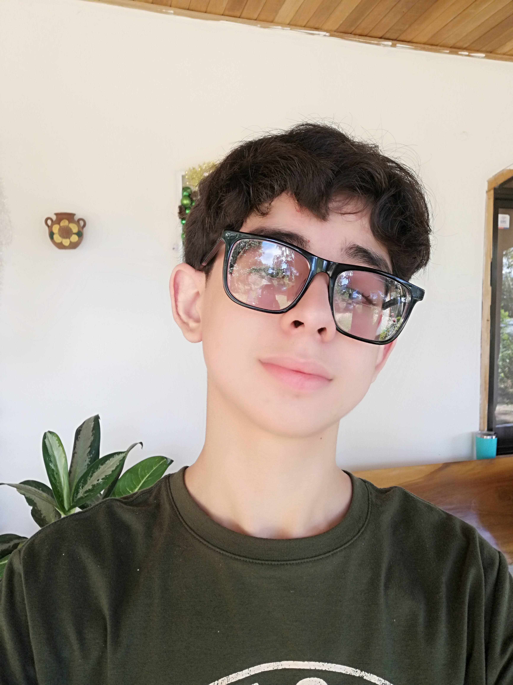
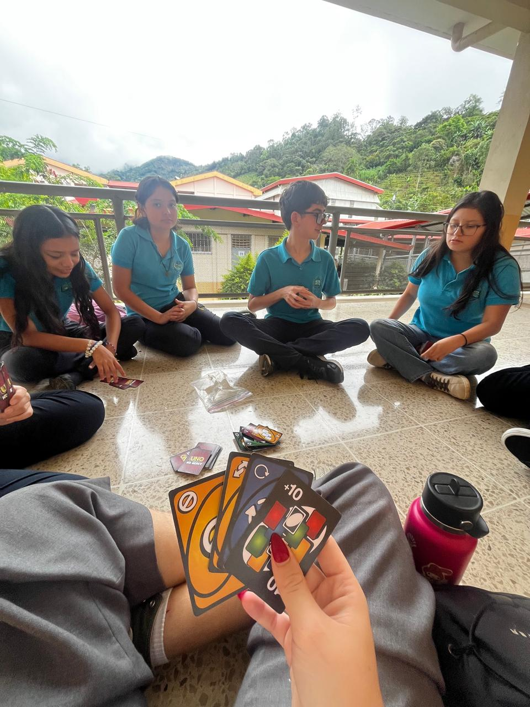
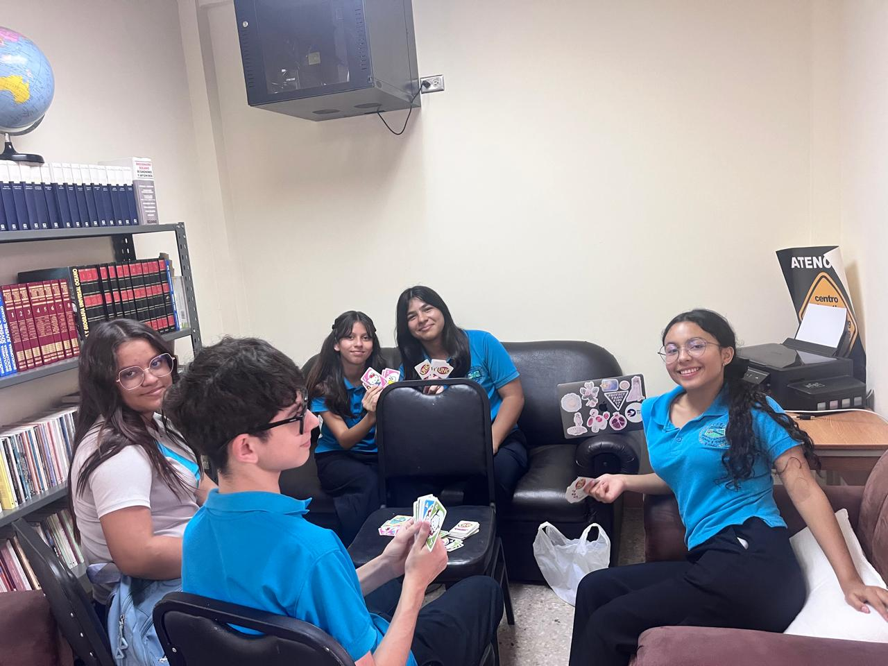
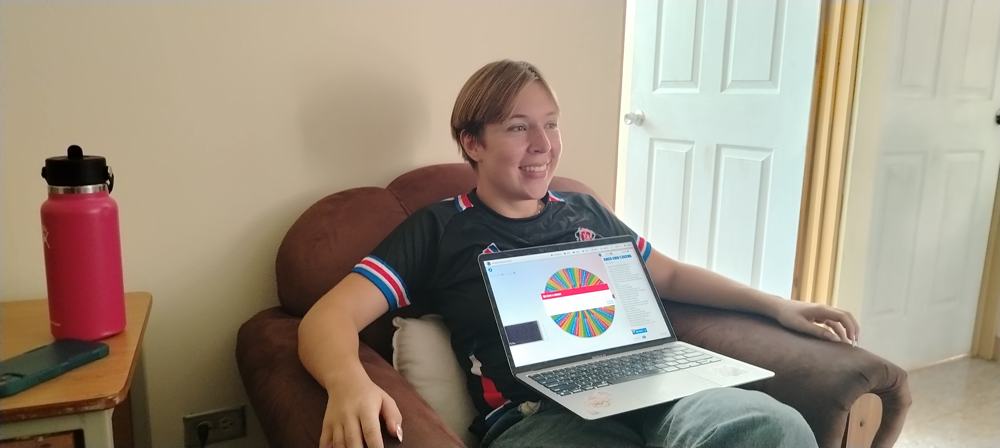
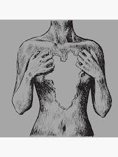

Hola, me llamo Emiliano. Nací el 29 de enero de 2011. He vivido toda mi vida en Palmichal de Acosta y actualmente estudio en el CTP de Palmichal. Siempre me ha gustado aprender cosas nuevas y me parece increíble cómo podemos superarnos descubriendo y realizando actividades que nos sacan de nuestra zona de confort.
Siempre me ha encantado realizar diversas actividades, como cantar, pasear, leer, programar (como en esta página web :>) y jugar videojuegos. Una de las cosas que más disfruto es escuchar música. Mi artista favorita es Billie Eilish; su música me ha acompañado durante muchos años.
He tenido siempre un buen desempeño académico desde la escuela, lo que me ha permitido adaptarme a desafíos que he experimentado a lo largo de mi vida y gracias a eso obtuve la mejor calificación en sexto grado. Las materias en las que me desenvuelvo mejor son Inglés, Matemáticas, Estudios Sociales y Computación.
He participado durante muchos años en actividades de la institución como eventos cívicos, FEA, festival de inglés, feria vocacional o festivales de Navidad, generalmente cantando. También soy parte del Consejo Participativo de Palmichal, dando charlas y actividades a los estudiantes para convivir mejor juntos.
En los últimos años he tenido varios proyectos personales, pero me gustaría hablarles de este año. Recientemente terminé un cuento para el FEA (Festival Estudiantil de las Artes), que es mi mejor trabajo hasta la fecha.
Este año comencé a centrarme en la programación en Python y HTML, lo que me ayudará a lograr mayores cosas en el futuro. También he mejorado mi inglés escuchando música y viendo películas en inglés en mi tiempo libre.



Esta es una de las actividades en las que más he disfrutado participar. Hace tres años, con la ayuda de Jo (una voluntaria estadounidense del Cuerpo de Paz), se nos ocurrió la idea de crear un club de inglés. Es un espacio seguro donde practicamos nuestro inglés a través de actividades divertidas. A lo largo de la historia del club, hemos logrado realizar diversas actividades para que los estudiantes puedan mejorar su pronunciación y compartir momentos agradables.
Soy parte de este proyecto porque quiero mejorar el inglés en el colegio y siento que esta fue una de las mejores e interesantes ideas que he tenido para contribuir educativamente al colegio como a los estudiantes.
Esta es la mejor historia que he escrito. Empecé este libro hace unos meses, cuando estaba pasando por un momento muy difícil en mi vida. Siento que escribir fue una forma de desestresarme y concentrarme en otras cosas.
Creo que poder expresar la tristeza o la ansiedad a través del arte es algo increíblemente bello y maravilloso que los seres humanos podemos hacer. También escribí este libro para presentarlo en la FEA, pero me gustó tanto que sin duda lo ampliaré y le añadiré más a la historia muy pronto. ¡Quién sabe, tal vez incluso lo publique internacionalmente algún día! Jaja.

Aquí puedes ver mi cuentoContenido de la Categoría 3.
A corto plazo: Planeo terminar este año escolar con excelentes calificaciones. Quiero profundizar en mi historia ya que es algo muy especial para mí. Quiero dar una charla para el Mes de Concienciación sobre el Suicidio, un tema que rara vez se discute.
A largo plazo: Mi meta es graduarme de un buen colegio con un excelente promedio. Quiero continuar participando en actividades estudiantiles, especialmente cantando. Siempre he estado interesada en estudiar fuera del país, particularmente ingeniería de sistemas en una buena universidad.
Descubrí UWC a través de TikTok mientras buscaba oportunidades de estudiar en el extranjero, y también a través de María Paula Ureña, quien estaba en el Consejo Participativo Palmichal conmigo.
Llevo un año investigando UWC y me parece increíble la idea de estudiar en un lugar con gente de todo el mundo que se esfuerza por crear un cambio positivo. Me fascina cómo se desarrollan y aprenden unos de otros, al experimentar las culturas de tantos países diferentes, y cómo es una experiencia que cambia por completo tu perspectiva sobre cómo puedes conectar y apoyarte entre sí.
Sé que el proceso de selección será desafiante y requerirá dedicación, pero haré lo mejor que pueda en cada aspecto, sin ocultar quién soy.